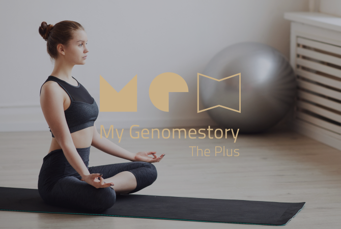
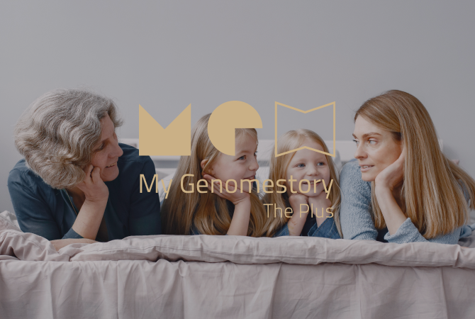

DTC Genetic Testing
“My Genomestory The Plus” is a DTC (Direct-To-Customer) genetic
testing service that allows clients to check their genetic characteristics or health-related
wellness categories without visiting a medical institute. These categories consist of nutrients,
exercise, skin/hair, diet, personal characteristics (e.g., alcohol flush reaction, nicotine
dependence), and health care (e.g., obesity, blood sugar, blood pressure). Our solution analyzes
genetic characteristics, based on which we provide a personalized lifestyle guide, not only
helping people to lead healthier and more beautiful lives but also providing opportunity to find
their true selves.
My Genomestory The Plus All-in-One 69 (73 subcategories)
My Genomestory The Plus All-in-One 69 (73 subcategories)

In addition to personal health and beauty management solutions, Macrogen helps you to get to know yourself by analyzing the genetic characteristics you want to know. The All-in-One solution covers the most areas in Korea and is a premium service that offers total health care.
※ The service is not available to persons under 19 years of age.
Nutrients: 20 subcategories including vitamin C concentration, vitamin D concentration, coenzyme Q10, and magnesium concentration
Exercise: 8 subcategories including fitness for strength exercise, fitness for endurance exercise, and recovery after exercise.
Skin/Hair: 13 subcategories including pigmentation, aging skin, and male pattern hair loss
Diet: 5 subcategories including appetite, satiety, and sensitivity to bitter taste
Personal Characteristics: 12 subcategories including alcohol flush, nicotine dependence, and caffeine metabolism
Health Care: 15 subcategories including obesity, tendency to yo-yo effect, abdominal obesity, and triglyceride concentration
My Genomestory The Plus Skin & Care 44 (48 subcategories)
In addition to personal health and beauty management solutions, Macrogen helps you to get to know yourself by analyzing the genetic characteristics you want to know. The All-in-One solution covers the most areas in Korea and is a premium service that offers total health care.
※ The service is not available to persons under 19 years of age.
Skin/Hair: 13 subcategories including pigmentation, aging skin, and male pattern hair loss
Nutrients: 20 subcategories including vitamin C concentration, vitamin D concentration, coenzyme Q10, and magnesium concentration
Health Care: 15 subcategories including obesity, tendency to yo-yo effect, abdominal obesity, and triglyceride concentration
My Genomestory The Plus 41 (43 subcategories)

The analysis for nutrients and exercise patterns allows you to plan your health care.
※ The service is not available to persons under 19 years of age.
Exercise: 8 subcategories including fitness for strength exercise, fitness for endurance exercise, and recovery after exercise
Nutrients: 20 subcategories including vitamin C concentration, vitamin D concentration, coenzyme Q10, and magnesium concentration
Health Care: 15 subcategories including obesity, tendency to yo-yo effect, abdominal obesity, and triglyceride concentration
My Genomestory The Plus 11 (13 Subcategories)

This is the only test solution that is available to persons under the age of 19, and consists of only the key services essential for easy and efficient health and beauty management.
Health: 6 subcategories including body mass index, HDL cholesterol, LDL cholesterol, and triglyceride concentration
Skin: 4 subcategories including pigmentation, aging skin, and caffeine metabolism
Hair: 3 subcategories including male pattern hair loss and alopecia areata